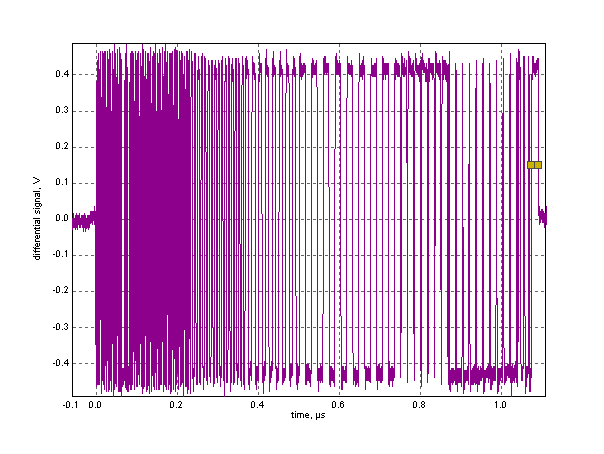
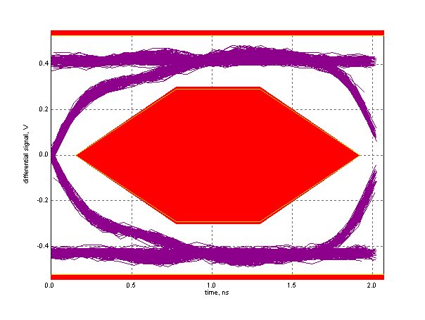

Near End High Speed Signal Quality Test
Results for GM8136_1
For details on test setup, methodology, and performance criteria, please consult the signal quality test description at the USB-IF Compliance Program web page.
Required Tests
- Overall result: pass!
- Sync result:
sync passes
- Signal eye:
eye passes
- EOP width: 7.99 bits
EOP width passes
- Measured signaling rate: 480.0679 MHz
signal rate passes
- Edge Monotonicity: 0 mV
Monotonic Edge passes
- Rising Edge Rate: 1450.03 V/us (441.37 ps equivalent risetime)
passes
- Falling Edge Rate: 1433.74 V/us (446.38 ps equivalent falltime)
passes
Additional Information
- Consecutive jitter range: -24.438 ps to 28.363 ps, RMS jitter 11.035 ps
- Paired JK jitter range: -25.346 ps to 25.339 ps, RMS jitter 8.863 ps
- Paired KJ jitter range: -25.109 ps to 18.958 ps, RMS jitter 10.090 ps
SignalData and Eye


Tracking Information
- Oscilloscope sample rate: 10.000 GS/s
- Data file: E:\GM8136_eye_Host usb2.0\GM8136_1.tsv
- Test version: 1.20.00
- Analysis performed: Tue Sep 09 13:38:28 2014